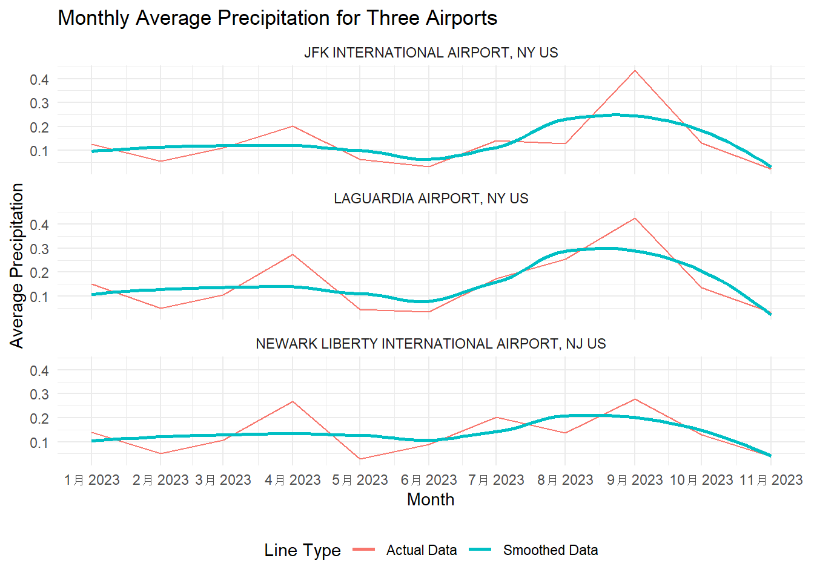
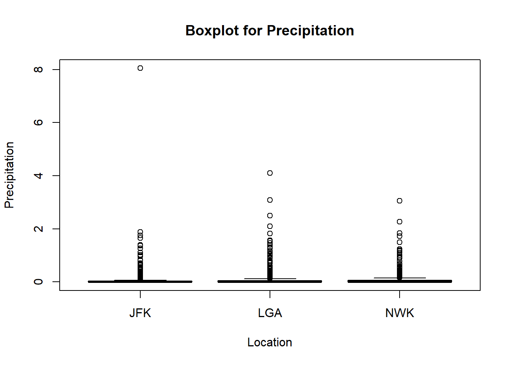
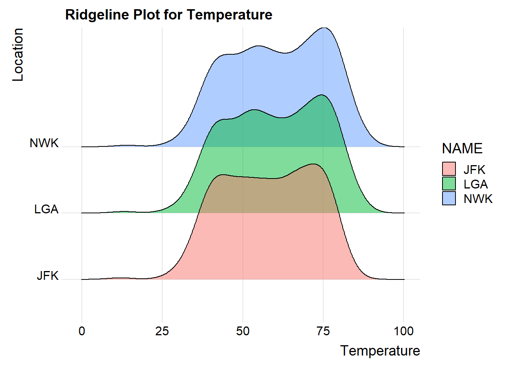

Code
library(lubridate)
library(ggplot2)
library(dplyr)
library(tidyr)
library(GGally)
library(vcd)library(lubridate)
library(ggplot2)
library(dplyr)
library(tidyr)
library(GGally)
library(vcd)##Data Proprocessing
#Data Cleansing
data_top5 <- read.csv("NY_wind_percip_top5cities.csv")##Airport Precipitation Monthly Trends
Line_data <- data_top5 %>%
filter(NAME %in% c("LAGUARDIA AIRPORT, NY US", "NEWARK LIBERTY INTERNATIONAL AIRPORT, NJ US", "JFK INTERNATIONAL AIRPORT, NY US"))
Line_data$DATE <- as.Date(Line_data$DATE)
# Group by airport and month, then calculate the monthly average
monthly_avg <- Line_data %>%
group_by(NAME, Month = floor_date(DATE, "month")) %>%
summarise(AvgPRCP = mean(PRCP, na.rm = TRUE))`summarise()` has grouped output by 'NAME'. You can override using the
`.groups` argument.# Plotting
ggplot(monthly_avg, aes(x = Month, y = AvgPRCP)) +
geom_line(aes(color = "Actual Data")) +
geom_smooth(method = "loess", se = FALSE, span = 0.8, aes(color = "Smoothed Data")) +
facet_wrap(~ NAME, scales = "fixed", nrow = 3) +
scale_x_date(date_breaks = "1 month", date_labels = "%b %Y") +
theme_minimal() +
labs(title = "Monthly Average Precipitation for Three Airports",
x = "Month",
y = "Average Precipitation",
color = "Line Type") +
theme(legend.position = "bottom")`geom_smooth()` using formula = 'y ~ x'
We are interested in comparing the general monthly precipitation trends of the three airports near New York City. The line graph shows similar patterns between the different airports, which is expected given their geographical proximity. These trends align with the historical weather patterns in the region, where the rainy season in New York typically starts in April and continues until June. However, we can still spot abnormal trends in the graph. Notably, there is a peak in precipitation in September at all three locations, which is usually outside the typical rainy season in New York. These observations align with news reports indicating that the total rainfall in September was the second highest in over 150 years in New York.
Apart from the general precipitation pattern, there are slight variations in the trends between the different airports. With other months being roughly equal, precipitation in September at Newark Airport is significantly lower than at the other two airports. This difference could be attributed to the distinct geographic locations of the airports. LaGuardia and JFK are situated on the same peninsula, unlike Newark, which could account for the disparities in precipitation patterns.
##Relationship between Precipitation, Wind, and Temperature
Slope_data <- data_top5 %>%
filter(NAME %in% c("LAGUARDIA AIRPORT, NY US", "NEWARK LIBERTY INTERNATIONAL AIRPORT, NJ US", "JFK INTERNATIONAL AIRPORT, NY US"))
# Group by airport and month, then calculate the monthly average
monthly_avg <- Line_data %>%
group_by(NAME, Month = floor_date(DATE, "month")) %>%
summarise(MonthlyPrec = mean(PRCP, na.rm = TRUE), MonthlyWindSpeed = mean(AWND, na.rm = TRUE), MonthlyTempreture= mean(TAVG, na.rm = TRUE))`summarise()` has grouped output by 'NAME'. You can override using the
`.groups` argument.ggparcoord(monthly_avg, columns=3:5, scale="uniminmax", groupColumn = "NAME") +
scale_color_discrete(name = "Airport") +
theme_minimal() +
labs(title = "Monthly Averages of Wind Speed, Precipitation, and Temperature",
x = "Variables",
y = "Normalized Values") +
theme(legend.position = "bottom")Our primary interest in this New York weather dataset is to explore how wind speed and temperature correlate with precipitation in different areas. The parallel coordinate graphs, grouped by the three airports, reveal distinct relationships between these three variables. Firstly, it’s clear that after normalization, the monthly wind speed at Newark Airport shows a significant decrease compared to monthly precipitation, unlike the other two airports on Long Island Peninsula. The blue lines representing Newark in the graph for monthly wind speed are concentrated towards the bottom, whereas the red and green lines, representing LaGuardia and JFK, are more focused towards the top. This suggests that Newark is more likely to experience lower wind speeds for a given level of precipitation.
The relationship between these variables for LaGuardia and JFK also differs slightly. Despite being geographically close, JFK often has slightly higher wind speeds for similar levels of precipitation. However, there is no distinct pattern observed between temperature and monthly precipitation. The lines for the temperature variable are mixed up, indicating a less clear relationship between temperature and precipitation at these locations.
# Precipitation VS Wind Speed
Heat_data <- data_top5 %>%
filter(NAME %in% c("LAGUARDIA AIRPORT, NY US", "NEWARK LIBERTY INTERNATIONAL AIRPORT, NJ US", "JFK INTERNATIONAL AIRPORT, NY US"))
# Binning the PRCP and AWND data
Heat_data$Binned_PRCP <- cut(Heat_data$PRCP, breaks = 10)
Heat_data$Binned_AWND <- cut(Heat_data$AWND, breaks = 10)
# Creating a new data frame for the heatmap
heatmap_data <- Heat_data %>%
group_by(NAME, Binned_PRCP, Binned_AWND) %>%
summarise(Frequency = n(), .groups = 'drop') # Counting occurrences
# Plotting the heatmap
ggplot(heatmap_data, aes(x = Binned_AWND, y = Binned_PRCP, fill = Frequency)) +
geom_tile() +
scale_fill_gradient(low = "lightblue", high = "darkblue") +
facet_wrap(~ NAME, scales = "free", nrow = 3) +
labs(title = "Precipitation vs Wind Speed for Three Airports",
y = "Binned Precipitation (PRCP)",
x = "Binned Wind Speed (AWND)",
fill = "Frequency") +
theme_minimal() +
theme(legend.position = "right",
axis.text.x = element_text(angle = 45, hjust = 1))The above heatmap shows the distribution of Wind Speed and Precipitation. The most frequent occurrences (darkest shade) appear in the lower bins of both wind speed and precipitation, suggesting that lower wind speeds and lower precipitation amounts are most common across all three airports. There are noticeable frequencies in higher wind speed bins (around 16.8-19.1) for the JFK International Airport, independent of precipitation levels, indicating occasional higher wind speeds regardless of rainfall. In contrast, frequencies in high wind speed of Laguardia airport and Newark Airport is low.
# Precipitation VS Temperature
# Binning the PRCP and TAVG data
Heat_data$Binned_PRCP <- cut(Heat_data$PRCP, breaks = 10)
Heat_data$Binned_TAVG <- cut(Heat_data$TAVG, breaks = 10)
# Creating a new data frame for the heatmap
heatmap_data <- Heat_data %>%
group_by(NAME, Binned_PRCP, Binned_TAVG) %>%
summarise(Frequency = n(), .groups = 'drop') # Counting occurrences
# Plotting the heatmap
ggplot(heatmap_data, aes(x = Binned_TAVG, y = Binned_PRCP, fill = Frequency)) +
geom_tile() +
scale_fill_gradient(low = "lightblue", high = "darkblue") +
facet_wrap(~ NAME, scales = "free", nrow = 3) +
labs(title = "Precipitation vs Temperature for Three Airports",
y = "Binned Precipitation (PRCP)",
x = "Binned Temperature (TAVG)",
fill = "Frequency") +
theme_minimal() +
theme(legend.position = "right",
axis.text.x = element_text(angle = 45, hjust = 1))The heatmap between temperature and Precipitation across all three airport showed similar distribution patterns. Generally, lower levels of precipitation are common across various temperature ranges. We see that the frequency of occurrences generally decreases as precipitation increases, regardless of temperature.
From this analysis, there is no clear pattern to suggest a strong correlation between temperature and precipitation; instead, each variable seems to vary independently.
##Distribution pattern among three variables
sp_data <- data_top5 |>
filter(NAME %in% c("LAGUARDIA AIRPORT, NY US", "NEWARK LIBERTY INTERNATIONAL AIRPORT, NJ US", "JFK INTERNATIONAL AIRPORT, NY US")) |>
filter(!is.na(TAVG) & !is.na(PRCP) & !is.na(AWND)) |>
dplyr::select(TAVG, PRCP, AWND, NAME) |>
dplyr::rename(
"Temperature" = TAVG,
"Precipitation" = PRCP,
"WindSpeed" = AWND
)
sp_jfk <- sp_data |>
dplyr::filter(NAME == "JFK INTERNATIONAL AIRPORT, NY US") |>
dplyr::select(Temperature, Precipitation, WindSpeed)
plot(sp_jfk, pch = 16, cex = .3, main = "Scatterplot Matrix for JFK")sp_nwk <- sp_data |>
dplyr::filter(NAME == "NEWARK LIBERTY INTERNATIONAL AIRPORT, NJ US") |>
dplyr::select(Temperature, Precipitation, WindSpeed)
plot(sp_nwk, pch = 16, cex = .3, main = "Scatterplot Matrix for NWK")sp_lga <- sp_data |>
dplyr::filter(NAME == "LAGUARDIA AIRPORT, NY US") |>
dplyr::select(Temperature, Precipitation, WindSpeed)
plot(sp_lga, pch = 16, cex = .3, main = "Scatterplot Matrix for LGA")In our comparative analysis using separate scatter plot matrices for the three selected variables, we observe similar distributions across all associations between temperature, precipitation, and wind speed. The scatter plots indicate a potential tri-modal distribution between average temperature and precipitation. Specifically, at temperatures around 40°F, 60°F, and 75°F, there is an apparent increase in precipitation levels. This pattern suggests that certain temperature ranges may be associated with heightened precipitation. However, outliers are also present, characterized by extremely low temperatures or exceptionally high precipitation. These outliers hint at sporadic extreme weather conditions, which are consistent across the three airports, likely due to their proximity to each other in the New York area. The relationship between precipitation and average wind speed, on the other hand, is more ambiguous. A general trend of lower precipitation at extreme wind speeds is noted, but with the presence of outliers indicating unusually high wind speeds. These deviations suggest occasional instances of strong winds, which may not necessarily correspond with significant precipitation. Regarding the correlation between average temperature and average wind speed, the data reveals no obvious linkage, implying a potential independence between these two variables. A notable observation is that extreme wind speeds often coincide with lower temperatures, although this does not establish a causal relationship. Overall, while certain patterns and trends are discernible in the data, the presence of outliers and the complexity of environmental variables underscore the nuanced nature of these meteorological phenomena.
##Examine the relationship between dependent and independent variables as categorical variables
categorize_data <- function(data) {
data |>
mutate(
Temperature = cut(Temperature, breaks = c(-Inf, 45, 55, 65, 75, Inf), labels = c("Very Cold", "Cold", "Mild", "Comfortable", "Hot")),
Precipitation = cut(Precipitation, breaks = c(-Inf, 0.1, 0.5, 1, Inf), labels = c("No Rain", "Light", "Moderate", "Heavy")),
WindSpeed = cut(WindSpeed, breaks = c(-Inf, 6, 12, Inf), labels = c("Calm", "Mild", "Windy"))
)
}
cat_jfk <- categorize_data(sp_jfk)
cat_nwk <- categorize_data(sp_nwk)
cat_lga <- categorize_data(sp_lga)
mosaic(Precipitation ~ Temperature + WindSpeed, data = cat_jfk,
direction = c("v", "v", "h"), main = "Combined Mosaic Plot for JFK", rot_labels=c(0,0,45,90), highlighting_fill=c("cyan","lightblue", "cornflowerblue", "navy"))mosaic(Precipitation ~ Temperature + WindSpeed, data = cat_nwk,
direction = c("v", "v", "h"), main = "Combined Mosaic Plot for NWK", rot_labels=c(0,0,45,90), highlighting_fill=c("cyan","lightblue", "cornflowerblue", "navy"))
mosaic(Precipitation ~ Temperature + WindSpeed, data = cat_lga,
direction = c("v", "v", "h"), main = "Combined Mosaic Plot for LGA", rot_labels=c(0,0,45,90), highlighting_fill=c("cyan","lightblue", "cornflowerblue", "navy"))In this analysis, we transformed the continuous variables into categorical ones by establishing specific thresholds. Precipitation was designated as the dependent variable, under the hypothesis that it might be influenced by variations in wind speed and temperature.
Regarding the relationship between temperature and precipitation, the data reveals a notable trend: the highest precipitation levels are recorded when temperatures are in the “Mild” range (55-65°F). This pattern is evident in the JFK dataset but is less distinct in the LGA dataset.
When examining the interaction between wind speed and precipitation, the mosaic plots for JFK and LGA display a consistent trend: an increase in wind speed generally correlates with higher levels of precipitation. However, this trend does not apply to the NWK dataset. In NWK, an interesting divergence is observed – at a “Comfortable” temperature range, precipitation levels tend to decrease as wind speed increases, contrasting with the patterns seen in JFK and LGA. This discrepancy highlights the complex and location-specific nature of these environmental variables.
##Distribution analysis for each variable comparing different airports
sp_data_abb <- sp_data
sp_data_abb$NAME <- ifelse(sp_data_abb$NAME == "LAGUARDIA AIRPORT, NY US", "LGA",
ifelse(sp_data_abb$NAME == "NEWARK LIBERTY INTERNATIONAL AIRPORT, NJ US", "NWK", "JFK"))
boxplot(Temperature ~ NAME, data = sp_data_abb, main = "Boxplot for Temperature", xlab = "Location", ylab = "Temperature")boxplot(Precipitation ~ NAME, data = sp_data_abb, main = "Boxplot for Precipitation", xlab = "Location", ylab = "Precipitation")
boxplot(WindSpeed ~ NAME, data = sp_data_abb, main = "Boxplot for Wind Speed", xlab = "Location", ylab = "Wind Speed")From the box plot, it’s evident that JFK experiences the lowest median temperature and the highest median wind speed among the three locations. Conversely, NWK exhibits the highest median temperature and the lowest median wind speed. In terms of precipitation, a common trend across all three locations is that a majority of the recorded values are zero. Additionally, the presence of outliers in wind speed across all three locations indicates sporadic occurrences of unusually high wind speeds. This could point to infrequent but significant meteorological events or possibly data recording anomalies.
##Another approach to visualize distributions
library(ggridges)
ggplot(sp_data_abb, aes(x = Temperature, y = NAME, fill = NAME)) +
geom_density_ridges(alpha = 0.5) +
labs(title = "Ridgeline Plot for Temperature", x = "Temperature", y = "Location") +
theme_ridges()Picking joint bandwidth of 4.06
ggplot(sp_data_abb, aes(x = Precipitation, y = NAME, fill = NAME)) +
geom_density_ridges(alpha = 0.5) +
labs(title = "Ridgeline Plot for Precipitation", x = "Precipitation", y = "Location") +
theme_ridges()Picking joint bandwidth of 0.00986ggplot(sp_data_abb, aes(x = WindSpeed, y = NAME, fill = NAME)) +
geom_density_ridges(alpha = 0.5) +
labs(title = "Ridgeline Plot for Wind Speed", x = "Wind Speed", y = "Location") +
theme_ridges()Picking joint bandwidth of 0.913The ridgeline plot analysis largely corroborates the insights gleaned from the boxplot analysis. It reveals that the temperature distributions across all three airports are quite similar, indicating a consistent temperature range. For precipitation, the distributions are heavily skewed to the right, with most values concentrated near zero. This skewness reflects a predominant absence of precipitation, punctuated by occasional higher values. In terms of wind speed, the distribution for NWK is notably more right-skewed compared to JFK and LGA, suggesting a generally lower wind speed at NWK. Additionally, NWK displays a shorter tail in its distribution, indicating fewer instances of extremely high wind speeds compared to the other two airports. This pattern is reflected in NWK’s lower median wind speed, as observed in the boxplot analysis.